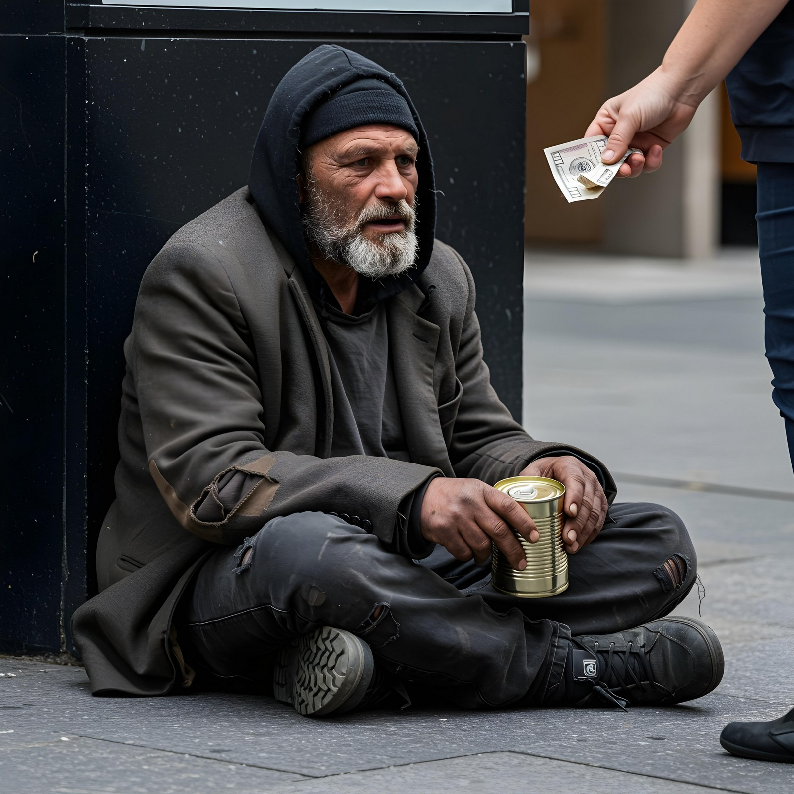
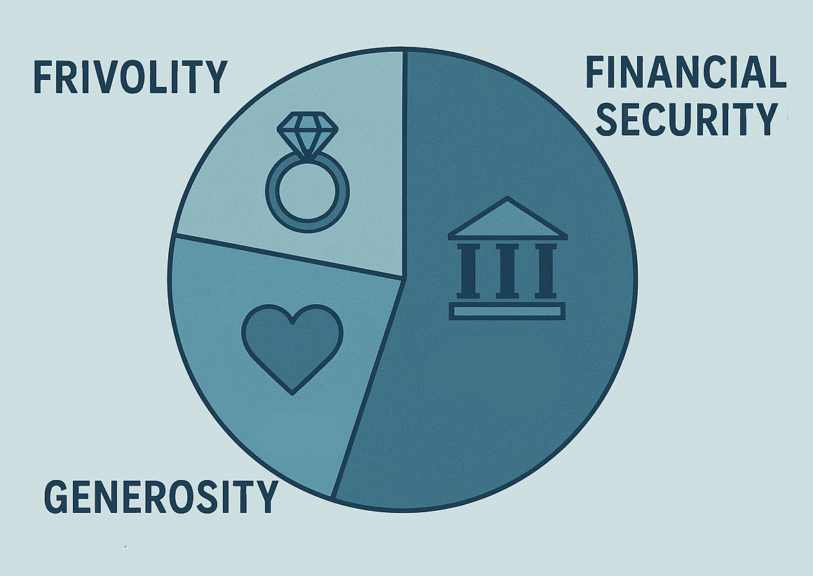

If I Won $5 Million Dollars
A Life-Changing Opportunity

Winning a $5 million tax-free lottery would be life-changing, requiring thoughtful planning rather than reckless spending. After careful reflection, I’ve devised a three-part plan that balances frivolity, financial security, and generosity. This approach ensures that my winnings create lasting fulfillment and impact beyond the initial excitement.
The Fun Fund: One Million for Frivolity
First, I would allocate $1 million to frivolous spending—experiences and luxuries that are fun while creating lasting memories. I would take a dream European tour, spending a week each in Vienna, Barcelona, Rome, and London. I would stay only in the most luxurious hotels. I would throw an extravagant party, renting a hotel and nightclub for one unforgettable night, complete with an open bar. At home, I would invest in a high-end home theater with reclining leather seats and a 120-inch screen, a professional espresso machine to enhance my mornings, and a spacious home gym.
Building Financial Stability
The largest portion, $2.5 million, would be dedicated to financial stability. I would immediately pay off all debts, including my mortgage, student loans, and credit cards. With expert financial advice, I would create a diversified investment portfolio focused on long-term growth rather than risky speculation. I would also establish multiple income streams, including dividend investments, and real estate rentals in an upscale neighborhood. This careful financial planning would allow me to establish a financially stable future.
Giving Back to Others
The remaining $1.5 million would be used to support loved ones and meaningful causes. I would sit down with my parents and siblings to assess how I could financially assist them. I would also set up a scholarship fund for underprivileged youth at a technical institute, to help them gain real employable skills.
A Lasting Impact

In conclusion, a $5 million lottery win is both a great opportunity and a responsibility. By balancing frivolity, financial security, and generosity, I would ensure my winnings create a meaningful and lasting impact. While the European trip and home luxuries would bring immediate joy, financial planning and philanthropy would provide long-term stability and a deep sense of fulfillment.